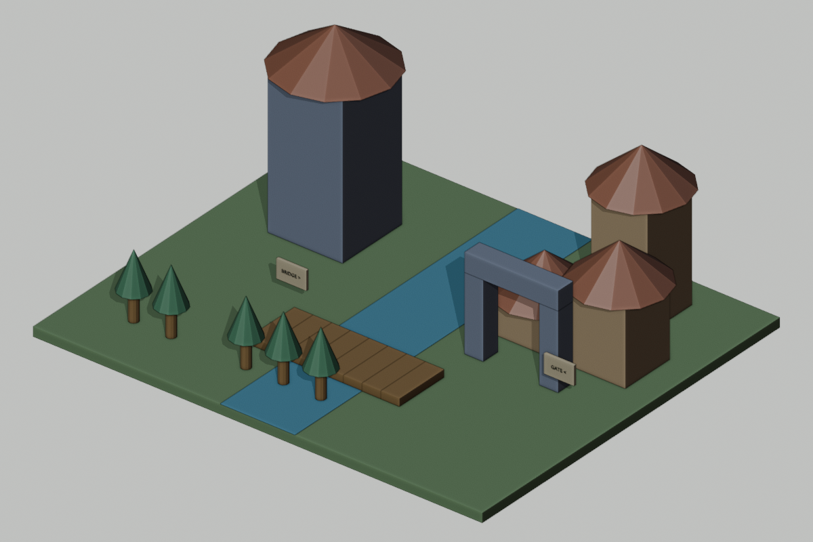

Your assignment today
- First: learn the explanation and watch today’s two demonstrations with your teacher.
- Then: try the two guided questions before looking at their solutions.
- Finish: work sections 1: Write expectations first; 2: Audit the evidence; 3: Decide one repair.
- Write here: your printed sheet,notebook,or usual school document. Label it Day 9 and your design ID. This website does not save written responses.
- Turn in: the required sections,one prediction/evidence/revision statement,and the six-question check in the format your teacher assigns.
- Finished early: select a continued-practice section or ChoiceA. You do not need to finish every optional task.
Start here • today’s change • finish here
Today: Inspect,choose one justified repair,and retest.

These are actual Blender renders of prepared reference scenes. Your class may choose different colors/details or defer a build. Compare measurements,not just appearance. On Days2,9,and10,the visible geometry may stay the same while planning,testing,or archiving advances.
TODAY’S FINISHED PRODUCT
One tested, integrated class world with a repair priority
What you actually do
1. Read the short reading. 2. Complete the must-do sections listed below in your own paper journal or school document;the remaining sections are continued practice. 3. Compare with a partner when told. 4. Keep working while the teacher operates Blender. 5. Record what passed or needs fixing. 6. Submit your work and check.
You do not open Blender or an AI account. The teacher submits one class request. If your design is not selected,you still submit your own thinking.
Learn this before doing today’s work
How to use this section: read the six explanations,follow the worked examples,then try the two guided questions. Your teacher will discuss them before assigning independent work. Return to the numbered explanation if you need help with a check question.
1. Pass,fail,and unknown are different
Pass requires suitable evidence that a stated requirement is met. Fail means suitable evidence shows it is not met. Unknown means evidence is missing or insufficient. A count of3 homes does not prove all3 are grounded. A row can contain a passed count and an unknown dimension;record both instead of inventing a complete pass.
2. Find the median by sorting
The median is the middle of an ordered set. Sort the times,then choose the middle value for an odd number of trials. For18,10,14,sort10,14,18;median14. The mean is different:add values and divide by count. The maximum is the largest. An outlier is an unusually large or small observation that can affect the mean or conceal risk when only a median is reported.
3. Roof contact,gap,and overlap
Compare roof bottom with body top. If equal,they meet. If roof bottom is higher,there is a gap of roof_bottom-body_top. If roof bottom is lower,there is overlap of body_top-roof_bottom. Use the roof center and depth to calculate its bottom when needed. Attractive appearance is not a substitute for the contact test.
4. Choose required repairs before extras
A charter is our agreed set of requirements. Integration checks whether individually built modules work together under that charter. A change request identifies one desired modification and its acceptance tests. Fixing a failed required crossing or roof takes priority over optional decorations when time is limited. Record what is gained,what is delayed,and what regression tests remain.
5. Timing correlation does not prove the cause
If a scene with more objects takes longer,we observed an association. Other differences—materials,AI reasoning,tool calls,network state—could explain some delay. To investigate a cause,control other relevant factors and repeat trials. Supplied illustrative numbers are not a measurement of our actual computer. Report failures and unusually slow trials as well as successful medians.
6. A whole route needs a corridor
A path line has no width. A2-unit-wide route needs1 unit of clear space on either side of its center line along the route,including turns and openings. A tower and bridge can each pass their local tests but still lack a usable connection. Inspect the entire corridor for collisions and unverified sections;the minimum gate width alone cannot prove the whole route works.
Watch how it is done
Choose Play for a captioned demonstration,or use Next step to move at your own pace. Each example takes about20 seconds to reach its last step;pause as long as you need. Use the class task’s own numbers when you begin your work.
Find and repair a roof gap using evidence
Animated teaching diagram · silent captions · 1 world unit = 1 meter. These are worked examples, not a recording of Blender.
See what a median can hide about processing time
Animated teaching diagram · silent captions · 1 world unit = 1 meter. These are worked examples, not a recording of Blender.
Read the original written steps
Audit an example roof
Body top4;roof center6;roof depth2. Roof bottom=6-1=5;gap=5-4=1. Requirement is contact,so this fails. To repair contact,center becomes4+1=5. Recheck another previously accepted feature after making the change.
Read a timing summary honestly
Trials11,13,60:sorted11,13,60;median13;mean84/3=28;maximum60. A13-second median hides that one run took a full minute. Report all three values and the small trial count before choosing a live-demo plan.
Try together before working independently
Optional guided-practice replacement: Day 9:find the mistake and check a repair. Your teacher selects one activity rather than adding all of them.
Write or say your answer first. Then open the explanation and compare your method,not only your final value.
Guided practice 1
Trials9,15,12 seconds:find median,mean,and maximum.
Compare your answer and reasoning
Sort9,12,15. Median12,mean36/3=12,maximum15. The mean and median happen to match here;they need not always match.
Guided practice 2
Body top5;roof bottom4.5. What status and amount?
Compare your answer and reasoning
Overlap.5;contact requirement fails. It is not a gap because the roof begins below the body top.
Help for the worksheet and extra choices
Eight-test table:separate each expected value from actual/source. A row can be partly checked. For benchmark analyst,mean=sum/count;median=middle sorted;maximum=largest;record an outlier rather than deleting it. For a decision matrix,choose priorities before adding scores;repair compliance should outweigh decoration under our charter.
Connect the idea to our class world
Integration joins modules into one system. A correct tower and a correct bridge can still form a poor world if no usable route connects them. An acceptance suite checks the whole design against the charter, and regression checks protect earlier successes. Tests need IDs, inputs or observations, expected outcomes, actual outcomes, and a decision. “Not checked” is different from “pass.”
Resource tradeoffs require data. Here is an illustrative benchmark dataset, not a measurement of your teacher computer: version A uses 35 objects and has three usable-build times of 12,14,16 seconds; version B uses 70 objects and has times24,30,36 seconds. The medians are14 and30. We cannot conclude object count alone caused the difference, because other features may differ. We can recommend A when it meets the same acceptance tests and our goal is predictable classroom response.
Our world must keep a route at least2 units wide through the bridge and gate. Tower height must remain8; bridge must retain8 planks; homes must be grounded; grove must keep its path gap. A final beauty render is optional. A saved scene plus a simple viewport image or a labeled paper plan can communicate the design. Good project decisions explain what was gained, what was sacrificed, and what evidence supports the choice.
Today’s assignment size
Must do: numbered work sections 1, 2, 3,the evidence/revision sentence,and the six-question check. Other numbered sections are continued practice if time allows,unless your teacher assigns one as your grade-specific task. Finish required thinking before starting an optional card. Grade7 on Day8 completes the unlabeled-pattern task in section2.
All students receive the teaching above;optional work is not a prerequisite for answering the check. If the class needs longer instruction,complete fewer practice cases or use the next class’s retrieval time for the remaining evidence. Do not skip the explanation to fit every extension.
Your four work sections
Design ID:________________ Grade:____ Date:__________
1. Write expectations first
Fill expected/evidence-needed for eight rows:terrain bounds;tower bottom/height;bridge span/count;home roof contact;grove gap;gate opening/blocker;sign non-color cues;previous modules preserved. Use the reference strip for numeric targets.
Finished when you have: Eight expected-results rows before examining actual data.
| Test/requirement | Expected | Actual & source | Status/next step |
|---|---|---|---|
2. Audit the evidence
Use the live class evidence if supplied. Otherwise use this SIMULATED report:terrain 24×20;tower bottom 0, height 8;bridge 8, span[-4, 4];H3 roof bottom 5, body top 6;no grove tree atx=-5;gate gap 3, clearance 4, no blocker;signs use color only;tower count unchanged. Add actual/source, status, and next step to every row. Mark unreported details UNKNOWN.
Finished when you have: Eight-row evidence table with honest source labels.
3. Decide one repair
Write a three-sentence recommendation:requirement that failed;evidence;smallest repair. Add three regression checks that should still pass after it. If using simulated data, label the recommendation simulated.
Finished when you have: One supported repair request and three regressions.
4. Use timing evidence carefully
Illustrative A:12, 14, 16 seconds, 35 objects. B:24, 30, 36 seconds, 70 objects. Find each median. Choose a version for a short classroom demonstration IF both meet the same tests. State one reason the numbers do not prove object count alone caused the difference.
Finished when you have: Two medians, a conditional recommendation, and a causal limitation.
When the teacher says “independent work”
Check a route,not just a line
On the map draw tower→bridge→gate→H3. Make a2-unit-wide corridor around the route. Mark potential collisions or places you cannot verify. Write three exact evidence requests, including a width measurement. Propose one alternative waypoint. Do not declare the complete route safe from the diagram alone.
After the class checks the result
Complete: “I predicted____. Our evidence source was____(actual scene/report/paper trace/simulated). It showed____. I changed or confirmed____because____. We still do not know____.”
Grade target
- Grade 6: Provide expected values in the table;students still classify evidence and justify at least two results.
- Grade 7: Complete the table and choose a minimal repair based on evidence.
- Grade 8: Add one boundary test and analyze an 80-second outlier in the optional benchmark card.
What to turn in
Submit work sections 1: Write expectations first; 2: Audit the evidence; 3: Decide one repair. Add your prediction/evidence/revision statement and the six-question check. Other numbered sections and choice cards are continued practice unless your teacher substitutes one for a grade-specific task.
Finished early? Choose one.
These are extra choices after your required work;your teacher can assign one in place of waiting work. Read the finished-product requirement before you start.
Benchmark analyst
Use illustrative runs C=20,21,80 seconds and D=25,26,27 seconds. Calculate mean, median, and maximum for each. Recommend a live-demo candidate for a30-second planning target. Explain how a median can conceal an80-second outlier and why three trials are limited evidence.
Turn in: Six calculations and a risk-aware recommendation.
Change control board
You have capacity for only one next change: add20 decorative lanterns; repair H3 roof; add a fourth home. Score each against charter compliance, evidence quality, workload, and route benefit using0–2. Recommend one change; write a request, predict two side effects, and specify three regression tests before acceptance.
Turn in: Decision matrix, change request, side effects, regression plan.
Object budget audit
Count a simplified world: terrain1, river1, tower2, bridge8, homes6, grove10, gate3, signs2. Explain total33. A student says five trees mean five objects; correct the reasoning. Allocate a60-object cap among two proposed enhancements while reserving10 objects for repairs.
Turn in: Your supported explanation,trace,or revised plan.
If technology fails
Use the supplied simulated report and illustrative dataset. Mark every result SIMULATED. Build the route corridor on the paper map and submit the same acceptance suite. Keep the class scene version unchanged until a teacher verifies fixes.
Shared-world reference strip
Ground24×20,top z=0. x=east/west,y=north/south,z=up. Tower body4×4×8,center(-7,4,4);roof radius3,depth2,center(-7,4,9). River x=-2 to2. Bridge8 planks,centers x=-3.5+i for i0–7,y=-4,z=.2;each1×3×.4. Homes H1(5,3,h2),H2(9,3,h4),H3(7,7,h6):body3×3×h,center z=h/2;roof depth2,center z=h+1. Grove:6 candidates,x=-9+2*i,y=-7,skipx=-5. Gate:posts x4 and8,width1,height4;lintel center(6,0,4.5),size5×1×1;gap3,clearance4. Required route width≥2. These are requirements until measured.